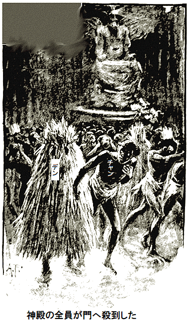

本件は謎と冒険の臭いがする。そういうことならドレントン・デン特派員が準備万端だ。シャズ山の森でぶらぶらして、当てのない迎え便を待つよりずっといい。
連れのグラスゴウという男は、奥地貿易に従事し、たったいま冒険旅行から帰って来たばかりだった。
「ここは中央アフリカの裏口だ。ノックの必要はない。君、はいるかい」
とグラスゴウ。
「珍品が手にはいったのか」
グラスゴウがニヤリ。五年も歯を食いしばって無駄に生きちゃいない。この屈強なスコットランド人の焼け具合はまるで褐色ブロンズ、あご
「君が今まで見たこともないブツだと請け合うぜ。今回はアラ山密林を横断するおそらく最後の旅だろう。前回は危険だったが、うまくやった。どうだい、このシロモノは」
荷物からグラスゴウが羽毛を取りだした。真っ白な羽根で、長さ六十センチ、最高の肌触りだ。得も言われぬほど柔らかい感触で、それをグラスゴウがひらひら振ると、
デンが大声でほめちぎった。
「たまげたなあ。世界一のダチョウ尾っぽも、これに比べりゃ
「あの袋に一万枚あるぞ。笑わば笑え。広げると小さなテーブルクロス程だが、ポケットに六枚も楽々はいる。見ろ」
とびきり美しい羽毛を丸めると、ビー玉より小さくなった。再び広げても、羽毛の輝く光沢と、優美な美しさは全く損なわれていなかった。
グラスゴウが続けて、
「八枚で重さは三十グラムだ。とても丈夫だよ。英国に持っていけばひと騒動だろう」
「君はそれで稼げる。どうだい一つ、その羽毛の鳥を見せてくれないか」
「あのな、この羽毛は鳥じゃないんだ。どんな生物か、全く知らないんだよ。俺はアラ族と今とても良い関係だ。奴らが持ってきてくれるけど、入手先は知らない。召使いのチャンが全てやってくれる。でも羽毛のことを聞こうものなら、オビ神とか何かの呪文を唱え、何日も口をきかなくなる」
デンは、気丈に振る舞っていたが、心臓はドキドキだった。
「でかしたな。二人でアラ山へ行こう。何だか知らないが、その鳥を見てやる。願ったりの冒険になるぞ」
グラスゴウが同意した。グラスゴウはほとんど気づかなかったが、デンは
「鳥を見ようとしたことはないのかい」
「ないよ。ここに来たのはカネの為だ。現地人を使って
一行は翌朝の夜明けに出発し、キャンプを信頼できる二人の現地人に預け、グラスゴウの忠実な召使いのチャンを同行させた。
チャンは一族の中でもできる男で、肌は黄色で、しなやかな手足を持ち、髪は直毛で真っ黒だ。
森の中は涼しかったが、道は狭く、蛇がうようよ。デンの気のせいか、枯れ木からズズ、ググと、のたくる音が聞こえ、時々うろこが不気味に光る。
デンがグラスゴウにささやいた。
「君の召使いはすぐやられるぞ。まるで神の
コブラだった。危険な
「危ない、バカもん。コブラを知らないのか」
チャンは楽しげに、いや哀れ気に笑って振り返った。そのとき、コブラがシュッと

「ヒエーッ驚いた。蛇にかまれたろ」
とデンが大声。
その通りだった。チャンの太ももに赤い刺し傷が二つあった。もう足が腫れ始めている。よくて半時間でチャンは死ぬ。
デンの顔には恐怖心がありあり。グラスゴウは笑っている。そしてチャンが歯を輝かんばかりに見せて笑っているさまは、求愛に成功した男のようだった。
「騒ぐな、大丈夫、一分でよくなる」
とチャン。
腰布から取り出した小さな茶色の物体は形と言い、色と言い、乾燥ソラマメのようだ。舌でなめて、なんだか無造作に傷口に塗った。そのあと、平然と歩き始めた。
「なんかのおまじないだろ。でも助からんな」
とデンがブツブツ。
デンは一人で
時が過ぎ、宿泊キャンプを設営した。チャンはノートルダム大聖堂の僧か、
デンはチャンを冷静に観察した。チャンが煙草に火をつけて、圏外へ去ったので、デンがグラスゴウに語りかけた。
「君は富豪へのすごい近道を見過ごしたようだぞ。チャンが毒蛇の特効薬を持っている。処方
「入手できればな。でもできない。アラ族は皆あの小さな茶色豆を携帯している。実は俺も持っている。チャンがくれた。チャンはあれで命をつないだ、ということだよ。作り方は羽毛を混ぜて、最後に、ある種のコケ脅し儀式をやる。一種の秘密結社だ。全財産を捨てれば処方
デンは黙った。実のところ、見聞して沈黙するために、のこのこ来たわけじゃない。ニューヨークポスト紙はそんな特派員には給料を払わない。しかも、あの処方
あとでチャンの固い信条を大いに揺さぶることになるが、折り畳みナイフと、足のつかない拳銃をやると、デンが弱みにつけ込んだ。
デンが秘密を暴こうとするのはとても危険なことであり、チャンは苦悩した。でも神はまだ遥か遠方だし、拳銃もすぐ手元にあるし……。
チャンが言った。
「これ言わない。グニュー神が毒蛇の解毒剤、造られる。グニュー神の腹、古文書ある。司祭がアラ神殿で守る。満月に神殿で薬、たんと造る。そのあとグニュー神の腹に古文書、しまう」
「その儀式をちょっと見せてくれたら、銀時計をやろう、どうだ、チャン」
チャンが震え、唇が真っ青。骨ばった膝がガクガク、口からよだれをたらし、絞り出すように言った。
「二度と言えば殺す。白人、大バカ。何様のこと話すか」
それからチャンは何も言わなくなった。でも、明らかに魂を徹底的に揺さぶられ、何度も熱い視線を送った先に、デンの上着から出ている銀時計の鎖があった。
誘惑を巧妙に効かせる技はヤンキーのデンがよく知っている。デンは儀式を見てやると決心。秘密儀式、秘密結社、そしてグニューと呼ばれる神の内蔵にある古文書。
地上で最も優れた特効薬を、狂信的な裸人に独占させるわけにいかない。デンは口を閉じた。
やがて三日目の夜、谷の向こう側にアラ族の小屋や
デンがチャンの隣に立って、ささやいた。
「銀時計の件はどう？」
チャンの歯がカチカチ、唇が神経質に引きつってブルブル。両眼が夜の猫目のようにギラリ。それからすすり泣いて、大粒の涙がほほに流れた。見られた姿じゃない。デンも恥じる気持ちを感じなくもない。
「じゃ、銀時計はお前のものだ。で、いつやる？」
チャンの唇の形がこう言った。
「明日の午後」
グラスゴウは、あてがわれた小屋の中で寝そべり、表向き時間の浪費を嘆くものの、超然としている。
「今日は仕事にならん。大騒動になる。神殿でバカ騒ぎを、月一回やる。普通じゃおとなしくて平和なやつらだが、定期的に狂い、ともすれば危険だ。こうなったら、ふて寝して、何にも興味を示さないことがアラ族とうまくやって行くコツだ」
「今時分は、内幕をつかんでいたはずなのに……」
「ああ、これまで何一つ
一分後、グラスゴウは眠った。デンは小屋からそっと抜け出て、チャンとの打ち合わせ場所へ向かった。アラ族はどこにも見えない。
チャンが目を伏せ、おどおどして、両眼に怒りを表わしたので、デンは自分の尻ポケットを意味深にパンと打った。
「たわごとは言うな。歌い、食ってる場合じゃない。問題は俺の変装だ。神事を見られるようにしてくれ。火明かりで分からんようにだ」
チャンが無愛想に説明した。
「あなた巡礼者。シャズ山からグニュー神殿にくる。神聖な行事。マホメット信者はメッカと呼ぶカイロに行く、それと同じ」
「わかった。だがどう見ても俺は巡礼者のようには見えないぞ。顔はどうするんだ？」
チャンが
「あなたの巡礼服、コレラで死んだ巡礼者から分捕った。誰も取らん。たぶんあなたコレラで死ぬ」
デンがちょっと震えた。当然、薄っぺら服をずたずたに引き裂きたい衝動に駆られた。
「あらゆる悦楽には障壁がつきものさ。いつ始まるんだ？」
一瞬チャンはデンに厳しい視線を向け、道を指さした。今まで奇妙なほど静かで、一人のアラ族も見えなかった。そのとき奇怪な風体の輩が村の大通りにやって来て、
小屋や、草むらや、森影から、死人の男女がむっくり起き上ったように見えた。狂った群衆が奇声を発し前進する。ギラギラ目と、化粧顔は内なる狂信が爆発したことを雄弁に物語っている。
物騒な群衆だ、間違いない。宗教儀式で熱く酔った群衆は文明国でも薬中毒患者のように危険だ。警告するまでもなく、ちょっとでも見つかったら八つ裂きにされる。
やや安堵したのは、ほかに何百人と巡礼者がいたことだ。二人はすぐに流れに巻かれた。脂臭い群れだった。
群衆が奇声を上げながら突進すると、叫び声が止まり、変に緊張した静寂が続いた。切望してはいるが、どうも気乗りしない様子は、まさに死刑執行を見せられる雰囲気だ。恐怖と好奇心が同居している。
デンの空耳か、相棒の息が上がり、あたかも遠方から全力で走って来たようだった。
やがて、一行が到着した巨大な岩体は、山の中腹から突き出ている。流れのままに運ばれ、絶壁の峡谷に押し込まれ、くぐった巨大な青銅製の門をみれば、美しく形どられ、仕上げられている。
デンがブツブツ、
「すごい。いったいこの豪華門はどこから？ ギリシャやローマもこんなすごいのはない。いい獲物に当たったなあ」
門は半円形の凸凹天井まで伸びている。中には天然の巨大神殿があり、花崗岩をくりぬいた十数個の窓明かりでぼんやり照らされていた。窓には精巧な青銅製の飾り格子がはめてある。
空間が広いので余裕で身を隠せた。デンは薄暗い隅を見つけ、そこにチャンと並んで、姿を見られず全容を観察できるようにした。今ほどわくわくする冒険は前にもない。
デンの鋭い眼力はすべてを見通した。次から次に驚かされたので、押し寄せる衝撃に馴れてしまった。天井から足元の床まで眺めた。
見れば、何か白い羽毛物質に
神殿全体に敷かれていたのは素晴らしい羽毛、グラスゴウが二、三日前に見せたものだ。文字通り、一杯ある。
巡礼者やアラ族は草のように踏んづけている。デンがよく調べようとかがんだら、チャンが腕をつかんで、ささやいた。
「何も触るな、死ぬ、バカ白人」
デンは忠告を受け入れた。実際、この美しい羽毛のほかにも、注意を引くものがあった。
神殿の後ろにはとても気味の悪い巨大な偶像がある。額の真ん中に巨大な一つ目があり、後からランプが照らしている。全てが極度に不気味だった。
偶像の足元の台上には大勢の司祭、いや、まじない師が集まっている。みなよぼよぼの老人、頭から足まで粗末な白衣を着ている。偶像の足元の台座を見れば、
すると、司祭たちが半円を組んで歌い始めた。当初、詠歌はか細く、物悲しく単調だったが、驚いたことに、馴染みのグレゴリオ聖歌ではないか。かつてここで祭事が行われていたのかと、感慨ひとしおだ。
「この世に新しいものはない。前に白人がここに居たに違いない。でなけりゃ、こんな門を一体どうやって作った」
やがて詠歌は大声になり一層激しくなった。ますます高まり、遂にひときわ激しい祈りを叫ぶや、司祭たちが前後に揺れて、祭壇にひれ伏した。
すぐさま一団が同じ動作をした。デンがチャンにぐいと引き倒された。おぞましい騒動のあとの静寂は奇妙で痛々しいほどだ。しかるに、これ以上ぞくぞくする強烈なものは見たことがない。
デンが半ば窒息しかけてひれ伏した羽毛は、体にまとわりつくほど快適で、純毛のように柔らかく、泡のように透けていた。
次に何が起こるのだろう。儀式の
十五分過ぎると、司祭長が頭を慎重に上げた。次々に、そして遂に全員が再び立ちあがった。勝利の雄たけびが続いた。
ゆっくりなのは老齢の為か、司祭長が巨大神像に登り始めた。まるでスフィンクスの頭に取りついたコナジラミのよう。
司祭長がよぼよぼという以外、どうということはないが、辺りはしんと静まり返っている。それから、司祭が神像の穴に腕を
羊皮紙は間違いなく解毒の処方箋を書いた神聖な古文書だ。おそらく馬鹿な奴らはいつもここに集まって、いつか偉大な神が怒って古文書を破壊すると思っているのだろう。
だが、破れてないし、司祭から司祭へ熱心に回し読みしている。それから台座に火をともし、その上にヒョウタンを置いて、何か液体を入れると、ツンとする煙がもくもく上がった。
ヒョウタンがぶくぶく沸騰する間、司祭たちはその周りを厳粛かつ大げさに踊り回り、デンの恭順を徹底的に試した。まったくばかばかしい騒ぎなので、この陽気なアメリカ人には、どうってことない。
やがて踊りが終わり、ヒョウタンから煙が出なくなった。中身を全部、大きな
歓喜の大声が響いた。宗教儀式は見事に成功した。終わりが近い。そのとき周りを見ると、夜が近づいていることが分かった。一分後、現場に
あたかも恐怖の発作に襲われたかのように、神殿の全員が門へ殺到した。チャンがデンの袖を引っ張った。

チャンが絞り出すようにささやいた。
「来い。
デンが手をふりほどいた。もし何かまだ見るべきものがあれば、見る覚悟だ。真っ暗な片隅に戻り、汗ダラダラの逆上群衆に巻き込まれないように、高い所に登った。
群衆が大騒ぎで逃げている。デンは神像のかすかな眼光で、群衆が引くのを見守った。
古文書は神像のおなかに収納され、司祭たちも逃げた。見れば、巡礼者はあわてて逃げながら、どの眼も上を見上げて恐怖におののいている。
デンが小声でつぶやいた。
「何か悪いことが起こる。なんで暗くなって逃げなければならないんだ？ たぶんいつもより儀式が長びいたんだろう。白魔王に出くわせたら、すごい夜になるぞ」
もう、あたりは全く静かになった。デンは不安を感じなかった。チャンはもちろんデンが群衆と外へ出たと思っている。
デンは大青銅扉がピタリ閉まり、閉じ込められたと分かっても、怖くなかった。
もし最悪の事態になっても、一晩中留まって、朝、神殿が開くとき、こっそり逃げる運に賭けよう。朝まで誰も邪魔するものがいないと確信した。だって司祭も信徒も暗闇を恐れているもの。
だから、ゆうゆうと好きなだけ探検できた。そう長くかからなかった発見とは、大神像の後ろに大きな洞穴があり、丘の中腹に続いている。
見渡せば床全体に比類なき純白羽毛が敷きつめられている。大勢の汚れた足でふんづけられたが、なおアザミのようにふかふかで、雨がバラの花を清めるように、汚れをはじく。
「こんな素晴らしいものは見たことない。どんな生物か、ちょっと見てやろう。鳥か野獣かが、後ろの洞穴に住んでいるのか。そのようだ」
実際にいる。というのも頭上高く、人間が行けない高さに、羽毛が一枚、ギザギザの岩棚にひっかかっている。
「珍品だ。鳥に違いない。飛ぶ獣なんていない。きっとそんなものが見られる。ここに来るなら、勝負してやる」
神像が依然としてデンを見おろしている。古文書を盗るという考えが直ちに浮かんだ。もしかしたら役に立たないかもしれない。それどころか、既知の科学調剤かもしれない。でも絶好の機会だ。
盗ろうと前進した時、何かが横を滑空し、頬を優しくなぜ、母の
デンはすっかり古文書を忘れた。古文書は宝石に勝るが、デンの心からすっぽり抜けた。巨大な白い影がデンのびっくり眼の前にサッと舞い降りて、空中で静止した。
何だ？ アホウドリより大きい、体も大きいし、翼長も長い。あまりにも激しく羽ばたくので、羽根の動きは目で追えない。鳥でも
これこそチャンが言ってた白魔王だ。でも全く無害だ。穏やかで悲しげな目と言い、音もしない真っ白な翼と言い、気高い小動物を暗示する。なおだんだん近づいてきたので、デンは後ずさりした。噂では巨大蛾は白人の目に見えないそうだが、ここにいる。
デンがじりじり後ずさりした。白魔王は相変わらず無音で追いかけ、あたかも空中に浮かんでいるようだった。穏やかで悲しげな灰色の目に魅入られ、じゃ香の匂いを嗅いだような気がした。そして一瞬、翼がデンに触れた。
圧迫はない、肉体に爪が残酷に食い込むこともない、恐怖におののくデンの肉体に、歯がかみつくこともない。だが確かに重さが加わり地面に倒れた。
それから両目、喉、両耳に何か詰まったように感じ、得も言われるほどキラキラ輝く暖かい雪の感触だが、サテン布のように柔らかい。
懸命に払いのけようとした。実際に自覚しているけど、羽毛に埋もれて窒息しかかっている。もがくほど、まとわりつく純白の海から逃れられない。
白魔王を捕まえようとすると、絹羽毛の中に肩まで腕を突っ込むばかり。まさか白魔王の心臓音を聞いたような気がした。でもそんなヒマすらなかった。もう少しで、浮世の
もがき、あえぎ、何とか息を継いだ。心臓が激しく鼓動し、冷や汗が吹き出た。広大な海に浮かび、忘却に流される心地になりかけた。強靭な男も、子供のように弱っていった。
そのとき、警告もなく、白魔王が羽ばたいて上昇した。デンは気が遠くなり、ぼうっとなり、仰向けのまま、上を見た。進路が変わった理由が分かった。頭上高くを見れば、巨大蛾が一匹ではなく二匹いる。
お互いにぐるぐる突進し、目が回るぐらい
デンは物影へ這って行き、四つん這いになって門へ向かった。
再び見上げた。見れば二匹の蛾がお互いにがっぷり組んで、車輪となり、光りながらぐるぐる回っている。一瞬、爆弾が二個爆発したかのようで、白い雲が大きく広がり、二匹を包んだ。雲が落下し始めると、バラバラの羽毛シャワーになった。
次に両者が突進したとき、片方の蛾がもう一方を避け、猛烈な速度で大神像の後方、薄暗がりに逃げた。一瞬の後、もう一方の蛾もいなくなった。
デンはうずくまり、息をハアハア。神像も古文書も、人類への貢献すら、何もかも忘れ、ただひたすらの望みは青銅扉を超えること。危険を実感した。降りかかり、まといつく危険だ。でもこの無言テロこそが怖い。夜が来たときアラ族が逃げたのも、驚くに当たらない。
間違いなく向うの洞穴の中にはこんな幽霊蛾が何百匹といる。いつ攻撃に戻ってくるかもしれない。一匹でも十分悪夢だったのに、大勢に包囲されたら、あの白い羽毛の破滅的な重みに埋まり、眼や、喉や、耳をふさがれて……。
デンはぞっとして考えるのを止めた。白魔王は今いないが、やがて危険だ。さらに、言うは易く行うは難し。逃げ道は大青銅扉以外にないし、いまは月光に照らされて輝き、あたりは銀色に染まっている。
デンは囚人のように格子越しに外を見た。そうしてると、草むらから人影が這い出てきた。デンが喜んだのなんの。人影は恐怖で真っ青に引きつった汗まみれのチャンだった。
「白魔王、いないか」
とチャンがささやいた。
デンが急いで安心させた。チャンが大扉の掛金を外して、ゆっくり開き、デンを外へ出した。もう危険はない。
神殿を後にしながら、チャンが元気づき、
「バカ白人、二度とあっちへ行くな。皆が去ったあと、あそこへ残ったろ。白魔王がいる。昼間は隠れ、夜だけ出る。あの洞穴に一杯いる。見たか」
デンは見たと言った。そのとき謎が解けた。デンの考えでは、何年か前、巨大純白蛾がこの神殿にやって来た。真実がわかるまで、大勢の司祭が謎の窒息死をした。当時分かったのは巨大純白蛾が日没後しか出てこないし、一晩中神殿を去らない。暗くなれば変身する。
だから儀式がいつもより長引いて夜になったので、アラ族と巡礼者はあわてて逃げた。
「じゃあ蛾はどこから飛んでくるんだ」
とデンが
チャンが遠くの丘を指差した。
「むこうの洞穴の谷。日が暮れてあそこへ行っては駄目。男、大勢死んだ。いつも行く。あそこ、駄目、時間があっても、拳銃があっても、銀時計があっても」
デンはあけすけな話を聞いて笑った。チャンの肩に置いた片手がまだ少し震えている。
「あてこする必要はない。おまえに最高の時計と、最高の拳銃をやろう。金になるぞ」
チャンが笑い、ため息をついた。神の怒りが怖く、心が重かった。
了